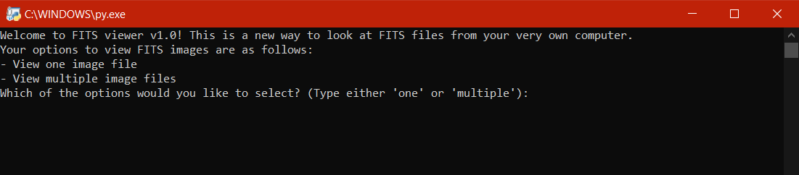
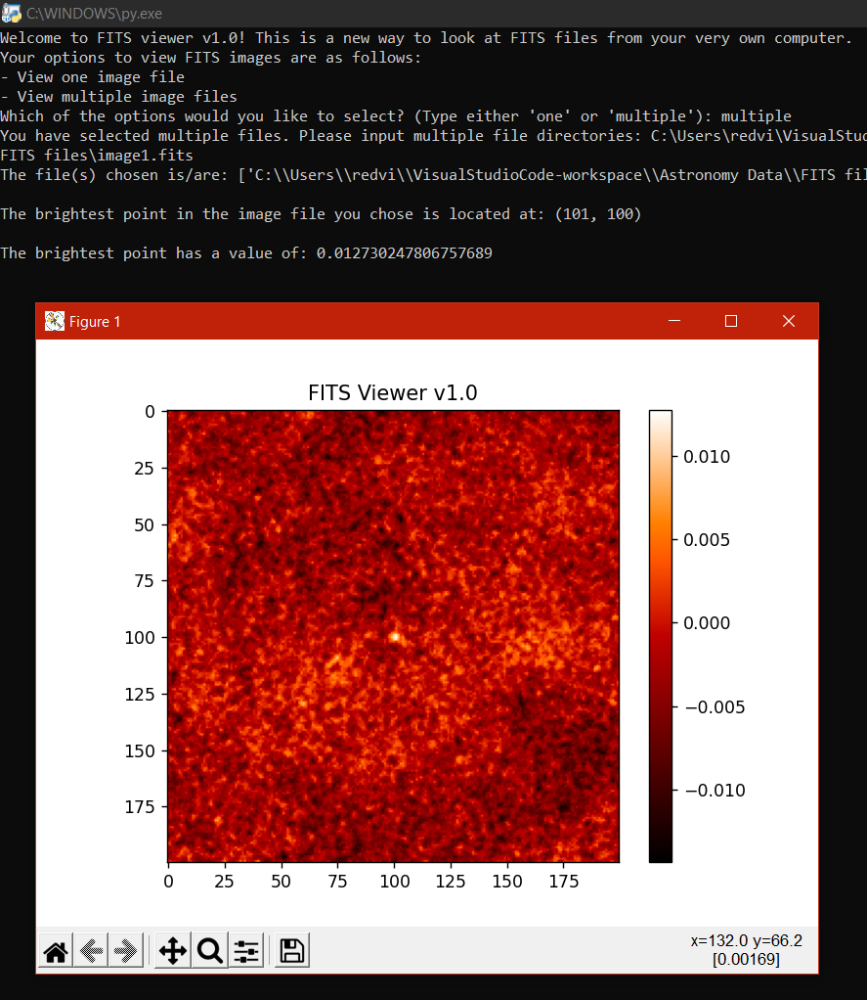
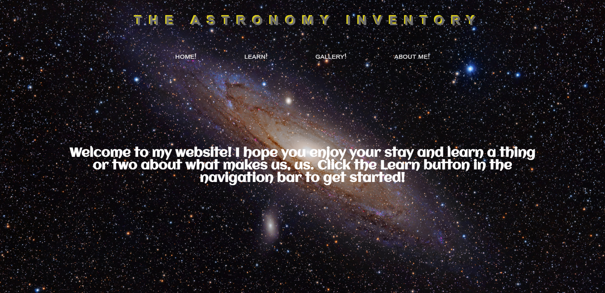
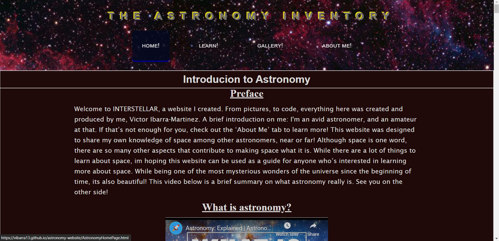
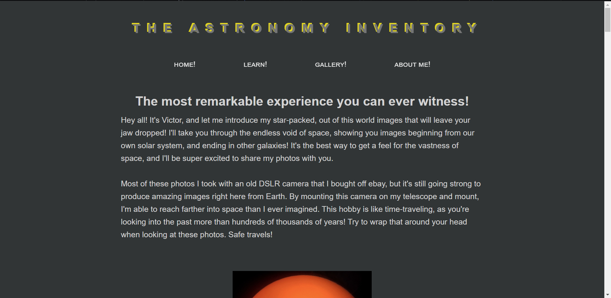
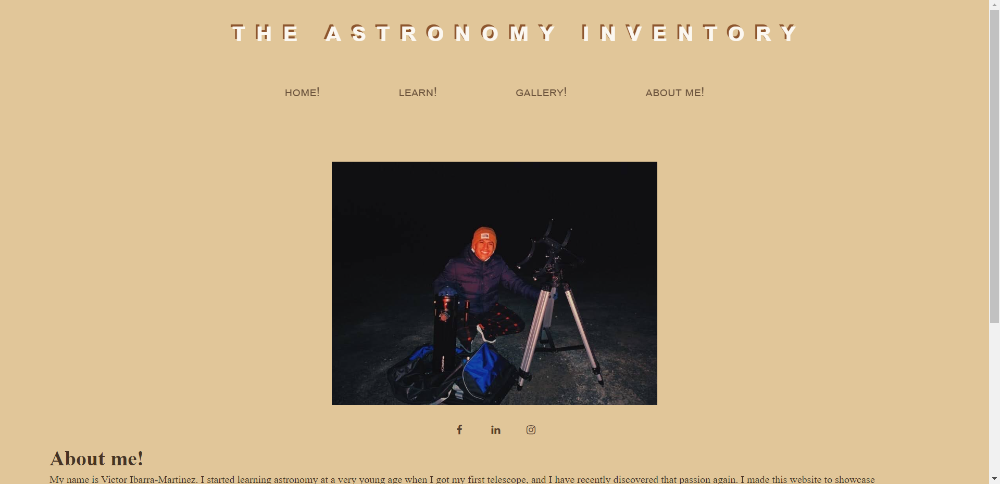

My Work
On this page, I'll sample and highlight some important features of some of my coding projects. I mentioned on my "About me" page that
I code in Python and web development languages, so those will be featured here. These are projects that I made because I genuinely enjoyed
them. As a disclaimer: my astronomy website may be a bit difficult on the eyes, so please don't mind that. I want the main focus to be on the use of
HTML and CSS to create a website with functioning hyperlinks, tabs, ease of use, embedded content, wrapping, etc.
FITS Image Viewer
Focus: Python and Data Science
The first project I will showcase is a FITS image viewer program. It is coded in Python, and uses the packages: Numpy, Astropy, and matplotlib.
I created this project to demonstrate my knowledge in arrays, 2-d plots, and external packages.
FITS images are a file format used for photos regarding astronomy. These files contain long arrays of data, which contain information about
the image. Because astrophotographs can get very large in size in such a short time, it would be difficult to analyze the data from large image files
by hand. Instead, computer code makes this a *somewhat* simple task, in which it reads in the image data and opens up a world of possibilities for the user
to explore.
In my science project, I decided to take this data and create a program to view a 2-d false color plot of the data. Each array
in the FITS files that I used contained integers that correlated to the brightness of a pixel, the higher the value, the brighter the actual pixel
of the astrophotograph. In addition, the program returns the brightest spot on the image, and can also stack multiple images and return the stacked image's
brightest spot. This might be a lot of information, but I promise I will make it clear.
With all that said, I will now sample two functions vital to the success of the app, and break it down piece by piece:
def read_fits(fits_file):
hdulist = fits.open(fits_file)
data = hdulist[0].data
return data
The read_fits() function is meant to read in a single fits file, and return the data contained within the file.
I included this function because it demonstrates the simple use of the FITS.open function to access a fits file. The data variable
becomes a 2-d array of ints because the image is 2-d, and it stores the brightness of the pixels of the image. Hdulist is the list of
information of the fits image, and the [0] grabs the first set of data which is pixel brightness.
def brightest_point(fits_data):
# without unravelling the index, location would return a large integer instead of coordinates
location = np.unravel_index(np.argmax(fits_data), np.shape(fits_data))
return location
This is the next shortest function of the program, which essentially returns the brightest point of the image as a set
of coordinates (x,y). It highlights the usage of the numpy package to get the maximum value of the data. One issue I ran into
was getting a 5 digit integer for the returned value. This wasn't a coordinate, but instead a single number that came about as
a memory characteristic. The memory of the value I needed was stored linearly, and not in a 2-d array as I wished, so calling
argmax would return the memory address of the location I was looking for, and not the coordinates. Unravel_index allowed me to
convert the linear indices into indices of a multi-dimensional block, in this case the shape of fits_data, finally allowing
the function to return the correct coordinates.
Here is a sample of the program:

After inputting one or several image files exact directories, the 2-d plot shows up and the program returns the
location and value of the brightest point:

The plot is a false-color plot, meaning there's no actual color in the image. The image is just made up of number data, and the
colors here just help map out the values of those numbers to make some sense of the data. In the above example, I input two fits
images, and they averaged out the brightest point at (101, 100). Its value was 0.12, which is pretty bright compared to other
spots on the image. This brightness is important because it means there was a higher flux of radio signals. Pulsars emit a high amount
of energy in radio signals, so this could be a potential pulsar.
This program is meant to detect pulsars using radio signals, but it is unlikely to do so with other wavelengths of light.
When inputting a non-existent file, or just making a typo mistake, the program shuts down and it would need to be restarted.
This concludes my FITS image viewer project.
My Astronomy Website
Focus: HTML, CSS, Front-end
In 2020, I started writing my own website beginning with nothing except the famous opening and closing "". I gave it
the name "The Astronomy Inventory" to share my knowledge of astronomy with anyone who is looking for a short guide on the night sky.
I learned HTML and CSS to make this happen, and there are many questionable design choices, but they felt right in the moment. Other
than that, I felt I made a simple, yet effective, website to present my own knowledge and photos in astronomy.

This is the homepage, which has a welcome message and the background image transitions from one to the next. Each image is
one that I have personally worked on. The homepage includes the four static navigation tabs underneath the website name, each one
re-directing you to a different page. I learned how to integrate a static navigation bar across several pages, make a transition
background, how to properly resize images to whatever device they're being viewed on, etc.

This is the learning page, where I wrote all the information. The example youtube video is embedded and provides some background
on astronomy so the visitor can get a quick summary before proceeding with the information. Here, I learned how to work with
easy to read fonts, line spacing, paragraph sizing, organization of content, etc.

The gallery page contains my best astrophotography images, and I present them in a top to bottom manner.

The final page is about me. I include three working links to some of my socials. I included facebook, linkedin, and instagram.
I include the icons in the hyperlinks, and I work with a different color scheme on this page, as I did on my gallery page.
Overview of project
This project helped me use my creative vision to make a website come to life. For the most part, I learned small but useful
skills in HTML and CSS. I learned a lot about different content types in HTML, such as headers, paragraphs, and images. In
CSS, I learned how to make the connection between HTML elements and CSS code to alter the appearance and functionality of
an element. I now have basic HTML and CSS functions in my toolbelt.